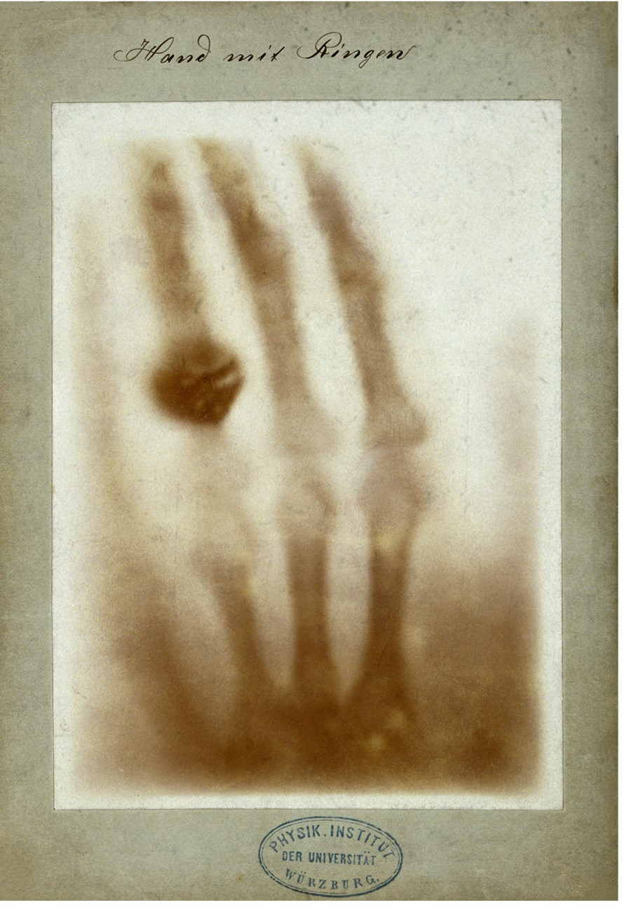
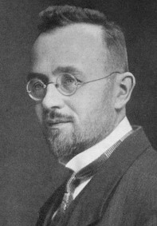
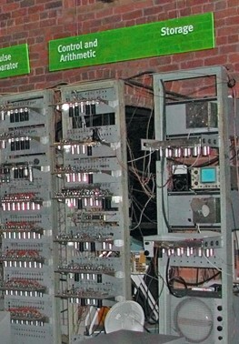
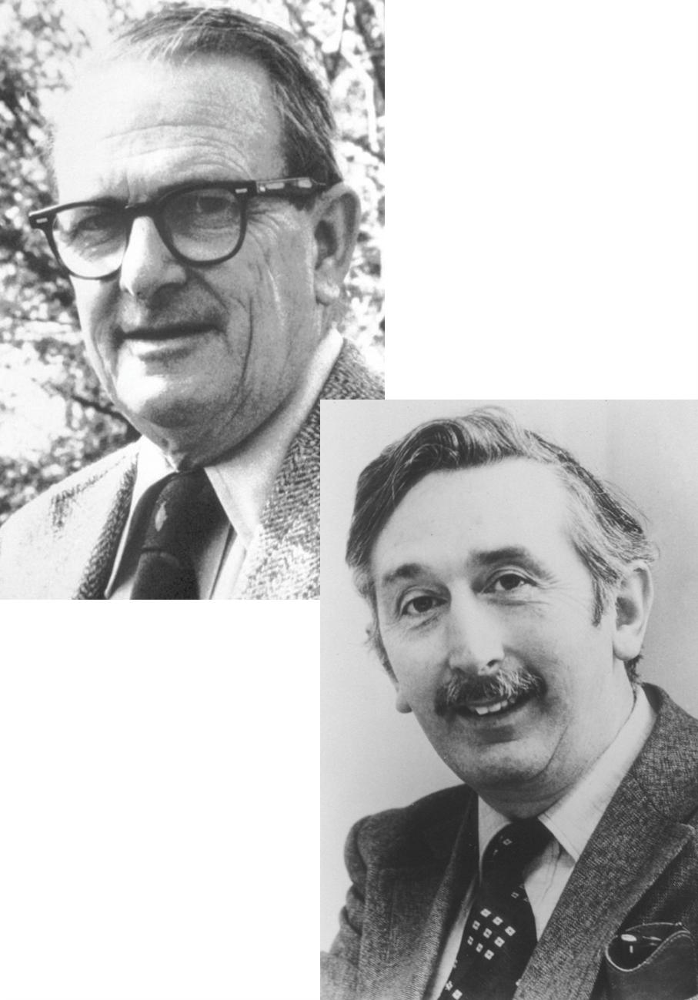

First computer algorithm

The first computer algorithm was invented by Ada Lovelace to calculate the sequence of Bernoulli numbers.
Discovery of x-rays

More information
The picture shows the first medical x-ray image, taken of Anna Bertha Ludwig's hand by Wilhelm Röntgen shortly after his discovery of x-rays.
X-rays in use in WW1
X-rays were in use as a diagnostic tool in world war 1. The picture shows a mobile x-ray unit developed and run by Nobel prize winner Marie Curie.
Radon transform

More information
Johann Radon first described the transformation required to reconstruct a volume from 2D x-ray projections.
Programmable computer

More information
The Manchester baby machine was the first stored program computer. Its development paved the way for using computers for complex calculations, like tomographic reconstruction.
First CT scanner
This needs to be a different picture
Tomography Nobel Prize

More information
The Nobel Prize in Physiology or Medicine was awarded to Allan Cormack and Geoffrey Hounsfield for their work on computer assisted tomography.